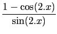

suivant: Transformer une expression trigonométrique
monter: Les expressions trigonométriques
précédent: Transformer tan(x) avec sin(2x)
Table des matières
Index
Transformer tan(x) avec cos(2x) et sin(2x) : tan2cossin2
tan2cossin2 a comme argument une expression trigonométrique.
tan2cossin2 transforme cette expression en remplaçant :
tan(x) par
.
On tape :
tan2cossin2(tan(x))
On obtient :
(1-cos(2*x))/sin(2*x)
Documentation de giac écrite par Renée De Graeve